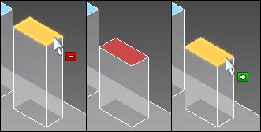
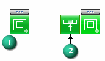
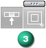
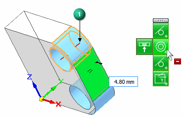
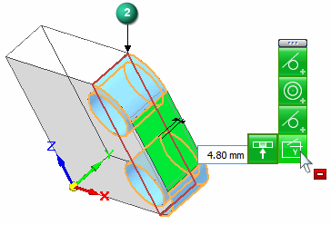
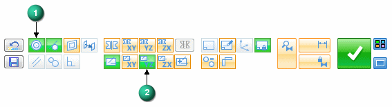

Solution Manager overview
Synchronous models use face relationships to control the model behavior during an edit. These face relationships include:
- Found
-
Relationships the system finds at the instance of a synchronous edit. These design intent relationships are found if the relationship type is turned on in the Design Intent panel or the Advanced Design Intent panel.
- Persisted
-
The relationships that you define as you build your model that are permanent and are maintained during a synchronous edit. See Define a relationship between two faces for more information.
- PMI
-
Locked dimensional relationships that you intentionally add to your model.
It is possible that a synchronous edit could fail because you have added constraints that prevent the move. It is also possible for a synchronous edit to be successful but to produce unexpected or unwanted results. The Solution Manager provides additional detail and more actions regarding the faces participating in the solution of a synchronous edit. Solution Manager is a tool that graphically interacts with the model to provide control of all relationships relevant to the current move.
Using the Solution Manager is optional and is only required if you need more control during a move than can be managed by the Advanced Design Intent panel.
Solution Manager Mode
-
Relevant faces change color to represent their role in the solution. See Model display in Solution Manager for more information.
-
When you pause the cursor over a participating face, a minus symbol appears. You can then select a face to suppress all relations and remove the face from the solution. When you pause the cursor over a suppressed face, the plus symbol appears. You can select the suppressed face again to unsuppress relations and allow the face to participate.
-

-
You can right-click a face to access all relationships associated with the face (1). When hovering over the relationship, a minus symbol appears. When you select the relationship on the palette, that relationship is suppressed for all faces in the solution. If you hover over the relationship, a fly-out appears (2). You can select the fly-out to only suppress that face from the solution.

When suppressed, the relationship is grayed out (3). The process can be repeated to add faces back in the solution. When greyed out, hovering over the relationship displays the plus symbol.

-
You can also click on a locked dimension to relax the constraint. The dimension returns to a locked state after making an edit.

Solution Manager provides graphics to help you understand the detected relationships. These graphics
appear in red. For example, if you hover over the Concentric relationship on the palette as shown, the concentric axis is displayed in red (1).

If you hover over the Aligned Holes relationship, the symmetric plane is shown in red.

You can also hover over a detected relationship on the Advanced Design Intent panel, and all of concentric axes, aligned holes, and symmetry planes appear.
